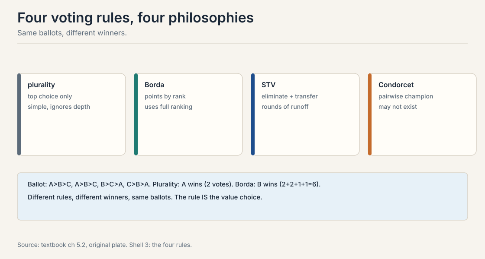
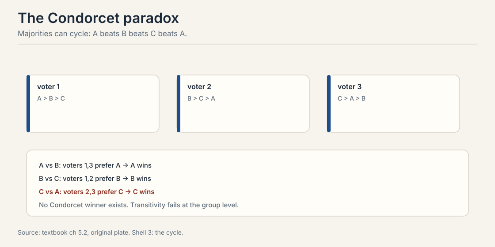
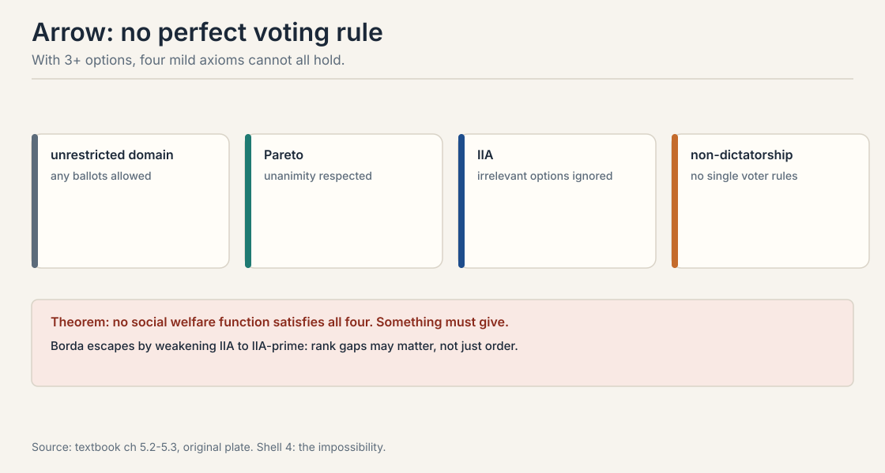
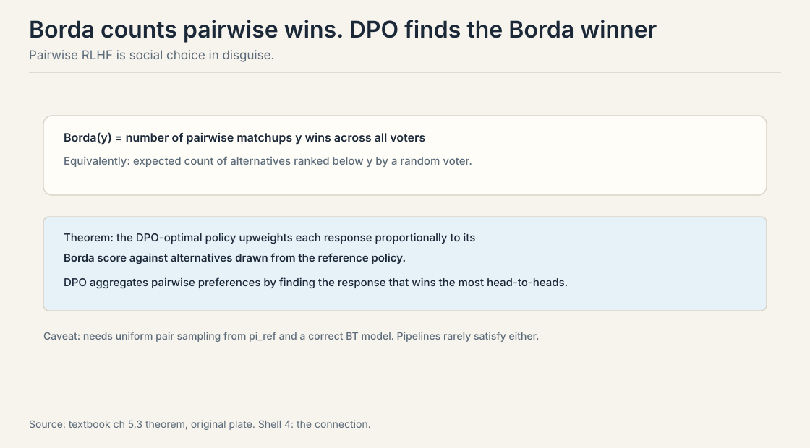
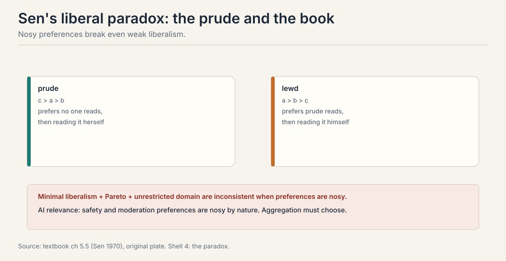

Lecture 8: Social Choice, Voting Rules and Impossibility
Video blocked (ad-blocker or local file mode).
Watch on YouTubeVideo not loading? Watch on YouTube
Course lecture (Stanford Online, Autumn 2024). Voting and social choice, with a guest segment by Colin Megill, CEO of Polis. Verified live on YouTube.
The problem: whose preferences?
Lectures 1 through 7 modeled one person’s preferences. Real systems serve millions. Ten thousand annotators label pairs. Their preferences disagree: some want concise answers, others want thorough ones. One policy must be chosen. The question: can a group decide coherently? The answer is mostly no, and the ways it fails shape AI alignment directly.
Carry one ballot box through the chapter. Three candidates: A, B, C. Four voters. Ballots:
voter 1: A > B > C voter 2: A > B > C voter 3: B > C > A voter 4: C > B > A
Four reasonable rules read these ballots. They pick different winners. That is the whole chapter in miniature.
First attempt: count the top choices
Plurality is the obvious rule. Each voter names a top choice. Most votes wins. On the toy: A gets 2 first-place votes, B gets 1, C gets 1. A wins.
Plurality ignores everything below first place. Voters 3 and 4 both rank B second, but plurality never looks there. The rule is simple and lossy. Three more rules read the same ballots differently.
Borda count. Voters rank all alternatives. Top gets m-1 points, second m-2, down to 0. Highest total wins. On the toy with m = 3:
A: 2 + 2 + 0 + 0 = 4 B: 1 + 1 + 2 + 1 = 5 C: 0 + 0 + 1 + 2 = 3
B wins with 5. Same ballots, different winner. Borda sees what plurality missed: B is everyone’s first or second choice.
Single transferable vote (STV). Ranked ballots, counted in rounds. Each round eliminates the weakest and transfers its votes to next choices, until someone has a majority.
Condorcet methods. Find the candidate who beats every other candidate in pairwise majority contests. If one exists, they win.

The rule is the value choice. Plurality rewards passionate minorities. Borda rewards broad acceptability. There is no neutral way to read the ballots. Choosing the rule chooses which slice of the voters’ will counts.
Each rule reads the ballots differently. Plurality sees only top choices: A wins 2-1-1. Borda weighs every rank position: B scores 5, A scores 4, C scores 3, so B wins. STV simulates sequential runoffs. Condorcet checks pairwise majorities. The ballot profile contains all of this information at once, and each rule extracts a different slice. There is no neutral extraction: choosing the rule chooses which slice counts. No rule dominates. That is Arrow’s point, covered below. Plurality is simple but ignores depth. Borda uses depth but violates IIA. Condorcet is principled but the winner may not exist. Pick by which failure you can tolerate, and say so explicitly.
Subchapter: STV, worked round by round
Single transferable vote counts in rounds. Each round, if someone has a majority, they win. Otherwise the weakest candidate is eliminated and their votes transfer to each ballot’s next choice. Work it on a 5-voter variant of the chapter’s toy, chosen so no tiebreak is needed:
voters 1-2: A > B > C voters 3-4: B > C > A voter 5: C > B > A

Round 1: first-place votes A = 2, B = 2, C = 1. Majority needs 3. Nobody has it. Eliminate the weakest: C with 1 vote. Voter 5’s ballot reads C > B > A, so the vote transfers to B. Round 2: A = 2, B = 3. B has the majority and wins.
Compare with the other rules on the same ballots. Plurality: no majority either, A and B tie 2-2. Borda: A gets 2+2+0+0+0 = 4, B gets 1+1+2+2+1 = 7, C gets 0+0+1+1+2 = 4. Borda crowns B with 7. STV also crowns B, but by a different route: sequential majority instead of point totals. The chapter’s 4-voter toy gives plurality to A and Borda to B. STV on the 5-voter variant agrees with Borda here, but the agreement is contingent, not structural. Different elections, different splits.
Subchapter: approval and score voting, worked
Plurality, Borda, STV, and Condorcet all read ranked ballots. Two more rules ask for richer ballots. Work both on the chapter’s 4-voter toy.
Approval voting. Each voter marks the candidates they approve. Most approvals wins. From ranked ballots we need a conversion rule, so state it: each voter approves their top two.
voter 1 (A>B>C): approves A, B voter 2 (A>B>C): approves A, B voter 3 (B>C>A): approves B, C voter 4 (C>B>A): approves C, B approvals: A = 2, B = 4, C = 2. B wins.
Score voting (range voting). Each voter scores every candidate, say 0 to 5. Highest total wins. Conversion rule, stated: top rank gets 5, middle gets 3, bottom gets 0.
voter 1: A=5, B=3, C=0 voter 2: A=5, B=3, C=0 voter 3: B=5, C=3, A=0 voter 4: C=5, B=3, A=0 scores: A = 10, B = 14, C = 8. B wins.
B wins under both, agreeing with Borda on this profile. The agreement is not structural. Approval voting ignores intensity past the threshold: a voter who loves A and tolerates B casts the same ballot as one who barely approves both. Score voting captures intensity, and with honest cardinal scores it maximizes utilitarian welfare, the sum of true utilities. That is the mechanism-design connection from Lecture 9: score voting is welfare maximization under honest reporting.
The price both pay is strategy. Under approval voting, a voter whose favorite is A but who fears C may approve only A, bullet voting, to deny B a point. Under score voting, the same voter scores A=5 and everyone else 0. Gibbard-Satterthwaite applies: no non-dictatorial rule with 3+ outcomes is strategy-proof. The richer ballot buys expressiveness and sells strategy-resistance. Name the tradeoff when you pick the rule.
Where aggregation breaks: the cycle
Majority preferences can cycle. Three voters, three candidates:
voter 1: A > B > C voter 2: B > C > A voter 3: C > A > B
Count the pairwise majorities by hand.
A vs B: voters 1 and 3 prefer A. A wins 2-1. B vs C: voters 1 and 2 prefer B. B wins 2-1. C vs A: voters 2 and 3 prefer C. C wins 2-1.
The group prefers A to B to C to A: a rock-paper-scissors cycle. No Condorcet winner exists, no candidate that beats every other head-to-head. Transitivity holds for each individual and fails for the group. Every individual is rational. The group is not.

Any aggregation method must break the cycle somehow, and every way of breaking it violates some fairness axiom. This is not a paradox with a clever resolution. It is a fact about majority rule.
The key question
If every rule breaks some axiom, is there at least one rule that breaks none of the reasonable ones?
Arrow: no perfect rule exists
With 3 or more alternatives, no social welfare function, a rule mapping ballot profiles to a group ranking, satisfies four mild axioms at once.

Unrestricted domain. Any ballot profile is allowed, including the cycle above.
Pareto efficiency. If everyone prefers x to y, the group ranks x above y.
IIA. The group ranking of x versus y depends only on individual rankings of x versus y. This is Lecture 3’s IIA, now applied to the aggregation rule.
Non-dictatorship. No single voter always decides the group ranking.
Theorem: no rule satisfies all four. Something must give. Drop unrestricted domain and cycles vanish on single-peaked preferences. Drop Pareto and the rule can ignore unanimity. Drop IIA and Borda works. Drop non-dictatorship and one voter decides. This is not a puzzle with a clever answer. It is a proof that the answer does not exist.
For AI the implication is direct. Any method that aggregates human preferences into one model behavior is a social welfare function. RLHF from many annotators is one. It cannot be fully fair, fully responsive, and fully principled at once. The design question is which axiom to relax, not whether to relax one.
With three or more alternatives, no voting rule satisfies unrestricted domain, Pareto, IIA, and non-dictatorship simultaneously. For AI: any method that aggregates human preferences into one model behavior violates at least one of these. RLHF from many annotators is a social welfare function. It cannot be fully fair, fully responsive, and fully principled at once. The design question is which axiom to relax, not whether to relax one. By weakening an axiom. Borda weakens IIA to IIA-prime: rank gaps may matter, not just order. Restricted domains like single-peaked preferences dodge the paradox. Randomization, random dictator, satisfies the axioms ex ante but not ex post. Each escape names its price.
Borda escapes by weakening IIA
The Borda score of y is the number of pairwise matchups y wins across all voters. Equivalently: the expected count of alternatives ranked below y by a random voter. Borda violates IIA but satisfies a weaker IIA-prime: if two profiles agree on everyone’s y-versus-y’ order and on how many alternatives sit between them, the outcome cannot flip. By relaxing IIA, Borda escapes Arrow.

Now the remarkable connection to Lecture 7. Train DPO with reference policy pi_ref. The DPO-optimal policy satisfies:
pi_DPO(y|x) / pi_ref(y|x) proportional to (Borda score of y)
DPO upweights each response proportionally to its Borda score against alternatives drawn from the reference policy. Pairwise RLHF is social choice in disguise: DPO finds the response that would win the most head-to-head matchups. The voters are sampled response pairs. The election is Borda.
Two caveats from the textbook. The equivalence needs uniform pair sampling from pi_ref and a correctly specified Bradley-Terry model. Annotation pipelines violate both: they oversample long or controversial outputs, and annotator pools disagree. In practice DPO implements a distorted Borda count, and the distortion is rarely measured.
The DPO-optimal policy upweights responses proportionally to their Borda score: the number of pairwise matchups each response wins against alternatives from the reference policy. So DPO is not just fitting preferences. It is running a Borda election where the voters are sampled response pairs. This gives DPO a social-choice interpretation: it aggregates pairwise preferences by head-to-head wins. Because it tells you what DPO is approximating and how the approximation distorts. Non-uniform pair sampling changes the implicit electorate: oversampled response types get extra votes. BT misspecification changes what a “win” means. If you know DPO is a Borda count, you can audit the election: check the sampling, check the model, and interpret the winner accordingly.
Four voters, three candidates, m = 3. Points: top = 2, second = 1, third = 0. Voter 1 (A>B>C): A=2, B=1, C=0. Voter 2 (A>B>C): A=2, B=1, C=0. Voter 3 (B>C>A): B=2, C=1, A=0. Voter 4 (C>B>A): C=2, B=1, A=0. Totals: A = 2+2+0+0 = 4. B = 1+1+2+1 = 5. C = 0+0+1+2 = 3. B wins with 5. Now read what happened: A won plurality with 2 first-place votes, but B was everyone’s first or second choice, and Borda’s point totals see that depth. Check the pairwise view too. B vs A: voters 3 and 4 prefer B, voters 1 and 2 prefer A, a 2-2 tie. B vs C: voters 1, 2, 3 prefer B, 3-1. The point count and the matchup count tell the same story two ways. With m candidates, each voter’s ranking gives m-1 points to the top, m-2 to second, and so on. Candidate y’s points from one voter equal the number of candidates ranked below y by that voter, which is the number of pairwise matchups y wins against that voter’s ballot. Sum over voters: total points = total matchup wins. The Borda score is the head-to-head win count. That identity is what makes DPO a Borda election.
Use Bradley-Terry fitted by MLE, the statistical Borda count: each model’s score is its latent strength, and the ranking is the fitted order. This is what LMArena does: since December 2023 its leaderboard runs a Bradley-Terry model on pairwise votes, not a raw Elo update. Add three components. First, bootstrap confidence intervals on the ranks: with sparse votes the #7 vs #8 gap is noise, and the interval says so. Second, style control: fit a verbosity term alongside model strengths so long answers do not buy rank, the lesson of Lecture 4’s systematic noise. Third, a fraud model: detect and downweight coordinated voting blocs, because Gibbard-Satterthwaite says the rule is manipulable and someone will try. Publish the rule, the intervals, and the manipulation audit. The ranking is a value choice. The audit is what makes it defensible. Win fraction ignores strength of schedule: beating weak models 10-0 says less than splitting 5-5 with strong ones. BT adjusts for opponent strength through the likelihood, exactly like Elo. Raw win fractions also have no uncertainty model. BT gives standard errors from the Hessian, which the leaderboard needs to avoid crowning noise.
With 3 or more outcomes, every non-dictatorial voting rule can be gamed: some voter can get a better outcome by misreporting their preferences. Concrete: under plurality, a voter’s favorite is polling third, so they vote for their second choice to block their least favorite. That is strategic voting, and the theorem says no rule design removes the incentive. It is Arrow’s impossibility wearing a mechanism-design costume: Arrow is about aggregating honestly reported preferences, Gibbard-Satterthwaite about eliciting them honestly. Both say the perfect rule does not exist. Annotators who know the aggregation rule can steer it. If labelers know the pipeline upweights majority-agreeing labels, contrarians misreport toward the expected majority. If they know verbosity is rewarded, they write long. Lecture 9’s answer: design the elicitation mechanism so honesty is the best strategy, or model the strategy explicitly. You cannot assume sincerity and aggregate at the same time.
Drop IIA, like Borda does. Unrestricted domain must stay: annotators will submit any ranking, including cycles, and the pipeline must handle them. Pareto must stay: if every annotator prefers y over y’, the policy should too. Dropping it means ignoring unanimity. Non-dictatorship must stay: no single annotator decides. IIA is the expensive one: it demands that the y-versus-y’ verdict ignore all other responses, which fails the moment candidates are near-duplicates. Borda’s IIA-prime is the workable substitute: the verdict may depend on how many alternatives sit between y and y’, just not on their identities. DPO inherits this choice: it is a Borda election, so it violates IIA and keeps the other three. Clones move outcomes. Add ten paraphrases of one response style and Borda/DPO upweights that style, because each paraphrase casts matchup votes. The mitigation is the deduplication from Lecture 3’s applied answer: keep the candidate set diverse so the weakened axiom has little room to distort. The axiom you drop chooses the failure you must police.
Nosy preferences: Sen’s liberal paradox
Classical social choice assumes private preferences: you care about your own outcomes. AI alignment runs on nosy preferences: you care about what others receive. Safety, moderation, fairness, and paternalism are all nosy.
Sen (1970): minimal liberalism, Pareto efficiency, and unrestricted domain are inconsistent when preferences are nosy. The textbook’s example: the prude and the book. The prude prefers that no one reads it, but failing that, prefers to read it herself rather than let the lewd one read it. The lewd one prefers to read it. Each claims a personal sphere: who reads what. Pareto pushes one way, liberalism the other. No resolution exists.

For alignment this is concrete. Content moderation is a nosy preference: you want others not to see certain content. Any system that aggregates nosy preferences inherits Sen’s inconsistency. Someone’s personal sphere must give.
Multi-issue voting
Real AI decisions span multiple issues: helpfulness, harmlessness, honesty. Can the group vote issue by issue? Only if preferences are separable: whether you want to add x to the bundle does not depend on what is already in it, only on whether x is intrinsically good.
The textbook’s characterization: a voting scheme satisfies surjectivity, strategy-proofness, and separability if and only if it is voting by committees, each issue decided by its own winning coalitions. The price: committee voting generally violates other desiderata, and separability itself is strong. Helpfulness and harmlessness interact: a helpful answer to a harmful question is not separable.
Mapping back: what each escape buys
| Aggregation pain | Escape | Price |
|---|---|---|
| Cycles: no Condorcet winner | Restrict the domain | Single-peaked preferences rarely hold for open-ended text |
| Arrow: no perfect rule | Borda weakens IIA to IIA-prime | Clones and irrelevant alternatives move the outcome |
| One dictator decides | Random dictator | Fair ex ante, arbitrary ex post |
| Issues interact | Committee voting per issue | Separability fails: helpfulness and harmlessness interact |
The honest price: every aggregation is a value choice
There is no neutral way to turn many preferences into one policy. Plurality, Borda, Condorcet, and DPO-as-Borda each read the same ballots and crown different winners. Arrow proves the neutral rule does not exist. Sen proves nosy preferences break liberal aggregation. The honest practice: name the rule, name the axiom you relaxed, and audit the distortion. “The data decided” is never true. A rule decided, and someone chose the rule.
Recap: the whole lesson on one screen
The story in eight steps. Each step answers the one before it.
- Whose preferences? One policy, ten thousand annotators, real disagreement. Aggregation is unavoidable.
- Four rules, four winners. The toy ballots: plurality crowns A 2-1-1. Borda crowns B 5-4-3. The rule is the value choice.
- Majorities cycle. A beats B, B beats C, C beats A, each 2-1. No Condorcet winner. Group rationality fails where individual rationality holds.
- Arrow: pick at most three. Unrestricted domain, Pareto, IIA, non-dictatorship. No rule satisfies all four with 3+ alternatives.
- Borda escapes by weakening IIA. Counts pairwise wins. IIA-prime replaces IIA. The price: irrelevant alternatives move outcomes.
- DPO is a Borda election. pi_DPO/pi_ref proportional to the Borda score. Pairwise RLHF is social choice in disguise, distorted by sampling and misspecification.
- Nosy preferences break liberalism. Sen’s paradox: the prude and the book. Moderation is nosy. Someone’s sphere gives.
- Name the rule. No neutral aggregation exists. State the relaxed axiom. Audit the distortion.
Go deeper
- Course lecture, Voting (Colin Megill / Polis guest segment): https://www.youtube.com/watch?v=1QpNZXL35NM
- Course textbook (Truong, Haupt, Koyejo): https://mlhp.stanford.edu/Machine-Learning-from-Human-Preferences.pdf
- Arrow (1951), Social Choice and Individual Values.
- Sen (1970): the liberal paradox.
- LMArena BT leaderboard adoption (Dec 2023): https://github.com/lmarena/lmarena.github.io/blob/HEAD/_posts/2023-12-07-leaderboard-elo-update.md
Official sources and further reading
Official: - CS329H Autumn 2024: Voting (video id 1QpNZXL35NM): voting and social choice, with the Colin Megill (Polis) guest segment. - Course textbook, chapters 5.2-5.5: voting rules, Condorcet, Arrow, Borda, the DPO-Borda connection, Sen, multi-issue voting. https://mlhp.stanford.edu/Machine-Learning-from-Human-Preferences.pdf
Further reading: - Arrow (1951), Social Choice and Individual Values: the impossibility theorem. - Sen (1970): the liberal paradox.
Caveats from these sources. The DPO-Borda proportionality needs uniform sampling and correct BT specification. the textbook flags both as violated in practice. The ballot toys are worked here from the textbook’s examples. Sen’s example is the textbook’s telling.
Connections to the other courses
- CS329H L02: the preference pair and BT. the matchup unit Borda counts.
- CS329H L03: IIA as a choice axiom, now as an aggregation axiom. heterogeneity as the source of disagreement.
- CS329H L07: DPO as a Borda election. the assumption checklist’s homogeneity item.
- CS329H L09: voting rules are manipulable mechanisms. Gibbard-Satterthwaite.
- CS329H L10: bridging versus majority in deployed systems. whose preferences count.
Sources
- VIDEOCS329H Autumn 2024: Voting (Stanford Online, Colin Megill guest segment)
- NOTESCourse textbook, chapters 5.2-5.5 (Truong, Haupt, Koyejo, 2025)
- PAPERArrow, Social Choice and Individual Values (1951)
- PAPERSen, The Impossibility of a Paretian Liberal (1970)